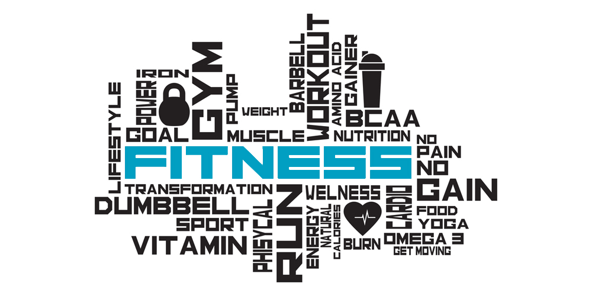

Thuật ngữ gym, gymer, quá trình tập luyện, kiến thức tập luyện, cơ thể, cơ bắp
Tham gia tập luyện tại phòng gym có thể là một hành trình đầy thú vị, nhưng cũng đầy căng thẳng. Mặc dù lợi ích từ việc đến phòng gym tập luyện là vô cùng lớn, vẫn còn rất nhiều thứ mà một người mới bắt đầu cần học hỏi: Từ bài tập tốt nhất cho mục tiêu của bạn đề ra, đến vấn đề nhỏ như việc một buổi tập nên kéo dài trong bao lâu mới ổn,…
Ngoài ra, các thuật ngữ gym cũng có thể nghe như một loại “ngôn ngữ lạ” đối với người mới tập tành đến phòng gym. Việc hiểu biết về một số ngôn ngữ gym thông dụng có thể giúp ích rất nhiều trong hành trình tập luyện của bạn.

CÁC THUẬT NGỮ GYM VÀ Ý NGHĨA CỦA CHÚNG
A
-
- ACTIVE RECOVERY (PHỤC HỒI CHỦ ĐỘNG)
Phục hồi chủ động bao gồm các hoạt động hoặc chuyển động nhẹ nhàng như đi bộ, duỗi người, yoga hoặc bơi lội. Nó có lợi trong việc giúp bạn phục hồi nhanh hơn sau khi tập luyện cường độ cao hoặc nặng và có thể được thực hiện như một bài tập hạ nhiệt (cool down exercise) sau khi tập luyện, xen kẽ trong khi tập luyện hoặc trong những ngày nghỉ.
-
- AEROBIC
Bài tập aerobic, còn được gọi là bài tập sức bền, bao gồm các hoạt động tim mạch như đi bộ nhanh, đạp xe hoặc bơi lội. Từ aerobic có nghĩa là “với oxy” và đề cập đến cách cơ thể sử dụng oxy để tạo ra năng lượng giúp bạn tiếp tục làm việc ở cường độ nhẹ đến trung bình trong thời gian dài hơn. Loại bài tập này có lợi ích to lớn cho sức khỏe tim mạch và thể lực tổng thể của bạn.
-
- AMRAP
Từ này là viết tắt của ‘Càng nhiều lần lặp lại càng tốt’ hoặc ‘Càng nhiều vòng càng tốt’ (as many reps as possible). Thường được sử dụng trong luyện tập kiểu vòng lặp, mục tiêu là hoàn thành càng nhiều reps hoặc sets càng tốt trong thời gian bạn có, thay vì nhắm đến một số sets và reps cụ thể. Với phong cách luyện tập này, phải luôn chú ý đến yếu tố tốc độ và cường độ, với thời gian nghỉ ngơi giảm.
Nhưng điều quan trọng là luôn ưu tiên hình thức, đảm bảo rằng bạn vẫn đang thực hiện bài tập an toàn và đúng cách.
-
- ANTERIOR (MẶT TRƯỚC)
Trong luyện tập, có thể bạn sẽ nghe đến “Anterior Chain” (chuỗi cơ mặt trước) – chỉ những nhóm cơ nằm ở mặt phía trước của cơ thể, như bắp tay trước (biceps) và bắp đùi trước (quads) của bạn.
B
-
- BARBELL (THANH TẠ ĐÒN)
Thanh tạ là một phần trong các loại dụng cụ tạ tự do (free weights), dùng cho tập luyện sức mạnh. Nó bao gồm một thanh kim loại dài và có thể đặt thêm các bánh tạ ở hai đầu của nó. Một thanh đòn chuẩn có trọng lượng 20 kg và dài 2.2 m. Có vài loại thanh tạ đi kèm với các bánh tạ cố định vào hai đầu, trọng lượng được quy định sẵn và chúng ta không thể gắn thêm các bánh tạ vào hai đầu của nó.
-
- BENCH (BĂNG GHẾ)
Băng ghế là một thiết bị thường được sử dụng trong tập luyện sức mạnh. Băng ghế có thể có nhiều kiểu dáng khác nhau, chẳng hạn như nằm ngang cố định cho các bài tập như Flat Bench Press, hoạc nghiêng cố định cho các bài tập như Incline/Decline Bench Press và những băng ghế có thể điều chỉnh thường thấy ở khu vực Free Weights của phòng thể hình. Bạn cũng có thể nghe một số người trong phòng tập gọi bài Bench Press – một bài tập ngực phổ biến.
-
- BIKE SPEED (TỐC ĐỘ ĐẠP XE)
Tốc độ đạp xe là một cụm từ bạn có thể nghe thấy trong lớp đạp xe tại phòng tập thể dục và nó chỉ đơn giản liên quan đến tốc độ mà chân bạn đang đạp – hay còn gọi là số vòng quay xe đạp.
-
- BICEPS (BẮP TAY TRƯỚC)
Biceps (hay còn gọi là bắp tay trước), là các cơ ở mặt trước (anterior) của cánh tay trên của bạn. Bạn có thể tác động vào bắp tay bằng các bài tập như barbell biceps curls hay preacher curls.
-
- BMI (CHỈ SỐ KHỐI CƠ THỂ)
Đây là thuật ngữ gym rất phổ biến trong việc tập gym, BMI là viết tắt của Body Mass Index, và là thước đo được tính bằng chiều cao và cân nặng của bạn. Con số này có thể ước tính xem ai đó có cân nặng khỏe mạnh hay không, tuy nhiên, nó không phải lúc nào cũng chính xác vì nó không tính đến sự phân bổ khối lượng cơ và mỡ của bạn, vì vậy không nên coi đó là thước đo sức khỏe duy nhất.
-
- BODY RECOMPOSITION (TÁI TẠO CƠ THỂ)
Body Recomposition là một cách tiếp cận việc giảm mỡ liên quan đến ăn uống ở mức duy trì hoặc mức thâm hụt calo rất nhẹ trong khi nâng vật nặng. Mục đích là sẽ cho phép người đó xây dựng cơ bắp trong khi giảm mỡ, mặc dù cân nặng có thể sẽ giữ nguyên.
C
-
- CALISTHENICS
Calisthenics là một phong cách rèn luyện sức mạnh sử dụng trọng lượng cơ thể và trọng lực để cung cấp lực cản thay vì tạ. Chỉ những thiết bị tối thiểu như parallettes và pull-up bars được sử dụng, và các bài tập Calisthenics nâng cao hơn đòi hỏi sức mạnh, khả năng vận động và tính linh hoạt cao.
-
- CARDIO (TIM MẠCH)
Cardio hay Aerobic là những dạng bài tập làm tăng nhịp tim và tốc độ thở của bạn. Cardio cải thiện sức khoẻ tim mạch và tuần hoàn, hỗ trợ đốt cháy calo và giải phóng các hormone khiến bạn cảm thấy hưng phấn.
-
- CLIPS/COLLARS
Clips hoặc đôi khi được gọi là Collars chính là những dụng cụ kẹp cố định bánh tạ vào hai đầu của thanh đòn, giúp chúng không bị xê dịch hay rơi rớt gây nguy hiểm cho người tập.
-
- COOL DOWN (HẠ NHIỆT)
Đây là thuật ngữ gym quan trọng bạn cần biết, Cool down hay các bài hạ nhiệt là phần cuối cùng của quá trình tập luyện giúp đưa cơ thể bạn trở lại trạng thái bình thường. Nó có thể liên quan đến một số chuyển động nhẹ nhàng, chẳng hạn như đi bộ chậm trên máy chạy bộ để giúp giảm nhịp tim của bạn và sau đó thực hiện một số động tác căng cơ tĩnh cho các cơ liên quan mà bạn đã tập luyện để giúp tránh bị cứng và căng.
-
- COMPOUND EXERCISES (BÀI TẬP TỔNG HỢP)
Các bài tập tổng hợp là các động tác yêu cầu vận động nhiều nhóm cơ trong một bài tập, chẳng hạn như squats hoặc deadlifts. Các bài tập tổng hợp giúp bạn xây dựng sức mạnh và tăng kích thước, nâng cao nhịp tim và đốt cháy calo hiệu quả hơn khi bạn nhắm đến nhiều nhóm cơ hơn trong một khoảng thời gian ngắn hơn.
Đây là những bài tập tuyệt vời nên chiếm một phần lớn trong bất kỳ chương trình rèn luyện sức mạnh nào, và sau đó chúng được bổ trợ bằng các bài tập cho từng nhóm cơ đơn riêng biệt.
-
- CONCENTRIC
Concentric chính là giai đoạn khi bạn làm co (rút ngắn) phần cơ bắp mà bạn đang tập luyện, còn được gọi theo kiểu khác là giai đoạn nâng nhấc (lifting phase). Giai đoạn này trong bài tập liên quan đến việc tải trọng (có thể là chính bạn hoặc trọng lượng tạ) hoạt động chống lại lực hấp dẫn, chẳng hạn như giai đoạn bạn nhấc quả tạ hướng lên trên trong bài bicep curl hoặc giai đoạn bạn bắt đầu đứng dậy từ vị trí thấp nhất trong bài squat.
-
- CUTTING VÀ BULKING
Cutting và Bulking là hai mặt của một chu trình được sử dụng để giảm (cắt) hoặc bulk (tăng) cân, với mục đích cải thiện thành phần cơ thể. Khi ai đó đang tập thể hình, họ ăn thêm calo trong khi nâng vật nặng để tối đa hóa phì đại cơ bắp hoặc tăng sức mạnh. Điều này thường được theo sau bởi giai đoạn cắt giảm, trong đó họ ăn ở mức thâm hụt calo để giảm mỡ tích tụ trong quá trình Bulking đồng thời ngăn ngừa mất cơ nhiều nhất có thể.
D
-
- DROP SET
Drop set là một thuật ngữ gym liên quan đến việc hoàn thành một bài tập trong phạm vi số reps mong muốn của bạn, sử dụng mức tạ khiến bạn có thể tập đến ngưỡng failure, sau đó ngay lập tức giảm xuống mức tạ nhẹ hơn và hoàn thành thêm nhiều reps nữa. Drop set có thể là một cách tuyệt vời để tăng cường độ và volume trong quá trình tập luyện của bạn và có thể giúp tối đa hóa việc phát triển cơ bắp.
-
- DOMS
DOMS là viết tắt của cụm từ delayed onset of muscle soreness (khởi phát đau nhức cơ bắp muộn) và đề cập đến cảm giác đau buốt hoặc nhức mỏi cơ bắp mà bạn có thể trải qua một đến hai ngày sau khi tập luyện. Chúng được gây ra bởi những vết rách nhỏ trong cơ, đặc biệt xảy ra trong quá trình luyện tập kháng lực và giai đoạn eccentric (kéo dài) của chuyển động cơ.
DOMS là một điều rất phổ biến và không đáng lo ngại – nhưng chúng có thể rất bất tiện cho việc tập luyện của bạn. Bạn có thể chọn tập luyện một nhóm cơ khác hoặc nghỉ thêm một ngày để chờ hồi phục.
-
- DYNAMIC STRECHES (GIÃN CƠ ĐỘNG)
Giãn cơ động là những chuyển động mang tính chủ động, giúp các khớp và cơ hoạt động trong phạm vi chuyển động (range of motion) hoàn thiện nhất. Chúng thường được sử dụng để khởi động trước khi tập luyện và có thể giúp cải thiện khả năng vận động cũng như tính linh hoạt.
E
-
- ECCENTRIC
Eccentric đề cập đến giai đoạn kéo dài của cơ và hoạt động cộng hưởng với lực hấp dẫn. Eccentric đôi khi được xem là giai đoạn hạ thấp (lowering phase), trái ngược với Concentric (lifting phase). Một ví dụ của Eccentric là giai đoạn hạ thấp quả tạ trong bài bicep curl hoặc tại vị trí ngồi xổm thấp nhất của bài squat.
-
- EMOM
EMOM là viết tắt của ‘Every Minute On The Minute’ là một hình thức luyện tập cách quãng, liên quan đến việc hoàn thành số reps được xác định trước của một bài tập hoặc các bài tập cụ thể trong vòng 60 giây. Sau đó, bạn tận dụng thời gian còn lại để nghỉ ngơi và phục hồi trước khi chuyển sang set tiếp theo khi 60 giây kế tiếp bắt đầu.
-
- EZ BAR (THANH EZ)
Thanh EZ là một thanh nhỏ có hình chữ W, có nhiều vị trí và góc mà bạn có thể cầm nắm loại thanh này. Thanh EZ thường được sử dụng cho các bài tập bắp tay trước và tay sau. Nó giúp người tập thoải mái hơn vì ít gây áp lực cho cổ tay và khuỷu tay so với thanh thẳng. Bạn có thể dùng thanh EZ được gắn sẵn tạ cố định hai đầu hoặc thanh trơn mà bạn có thể tự lắp mức tạ phù hợp với mình lên.
F
-
- FREE WEIGHT
Free Weight là các loại trọng lượng không được gắn cố định vào máy hoặc mặt đất để có thể nhặt và di chuyển xung quanh, giống như quả tạ hoặc thanh tạ. Bạn cũng có thể nghe thuật ngữ “khu vực Free Weight” trong phòng tập thể dục và điều này chỉ đề cập đến khu vực nơi bạn sẽ tìm thấy nhiều loại tạ tự do và băng ghế có thể điều chỉnh.
-
- FUNCTIONAL FITNESS/ FUNCTIONAL TRAINING (TẬP LUYỆN CHỨC NĂNG)
Tập luyện chức năng liên quan đến việc luyện tập để cải thiện sức mạnh và khả năng vận động của toàn bộ cơ thể bằng cách sử dụng các động tác thực tế trong cuộc sống, như đẩy, nâng, leo, vặn và kéo. Phong cách tập luyện này giúp thực hiện các hoạt động hàng ngày cũng như thể thao dễ dàng hơn.
Tại The New Gym các khu vực tập luyện đều có khu Functional rộng rãi, bạn có thể tự do tập luyện để rèn luyện sức khoẻ.
H
-
- HIIT
HIIT là viết tắt của High Intensity Interval Training (luyện tập cường độ cao ngắt quãng)
-
- HYPERTROPHY (SỰ GIA TĂNG KHỐI LƯỢNG CƠ BẮP)
Hypertrophy là một thuật ngữ kỹ thuật liên quan đến sự gia tăng tốc độ phát triển và kích thước cơ bắp. Tập luyện hướng đến sự phì đại cơ bắp có nghĩa là các bài tập, số rep và set bạn thực hiện sẽ tập trung vào việc tăng khối lượng cơ hơn là xây dựng sức mạnh cơ (mặc dù cả hai đều sẽ xảy ra). Nếu mục tiêu của bạn là gia tăng khối lượng cơ bắp, bạn nên tập trong phạm vi từ 6 đến 12 reps.
I
-
- ISOLATION EXERCISE (BÀI TẬP CÔ LẬP)
Các bài tập cô lập ngược lại với các bài tập tổng hợp (Compound exercise) và tác động lên một cơ và khớp đơn lẻ thay vì các tập hợp cơ lớn – ví dụ như bài bicep curl. Các bài tập cô lập là một cách tuyệt vời để đặc biệt chú ý đến các cơ cụ thể nào đó, giúp bạn đạt được mục tiêu của mình, giảm sự mất cân bằng cơ bắp và phục hồi chấn thương thể thao.
-
- ISOMETRIC HOLD (GIỮ ĐẲNG ÁP)
Các bài tập giữ đẳng áp liên quan đến việc giữ một tư thế mà các cơ bị co lại, ví dụ như tư thế ngồi lưng áp trên tường (Wall Sit) hoặc bài plank. Giữ đẳng áp giúp xây dựng sức mạnh và độ bền trong khi giảm thiểu áp lực lên các khớp. Chúng cũng có thể giúp xây dựng kết nối giữa cơ bắp và tâm trí, tăng khả năng cảm nhận cơ.
L
-
- LATS
Lats là một cụm từ thường được sử dụng để mô tả latissimus dorsi – một cơ lớn, hình quạt hoặc hình chữ ‘V’ ở hai bên lưng. Nó bắt đầu từ dưới vai, kéo dài xuống lưng, quấn quanh bên hông và dưới cánh tay. Đó là cơ rộng nhất trong cơ thể và là nơi phát lực chính trong các bài tập kéo như pull-ups và lats pull down.
-
- LISS
Low Intensity Steady State cardio (tim mạch trạng thái ổn định cường độ thấp) hay LISS là một loại hình tập luyện liên quan đến việc thực hiện các bài tim mạch cường độ thấp như đi bộ, trong một khoảng thời gian dài hơn.
M
-
- MACROS
Macros viết tắt của Macronutrients (các chất dinh dưỡng đa lượng), dùng để chỉ ba loại chất dinh dưỡng chính trong thực phẩm: protein, carbohydrate và fat. Một số người theo dõi ‘macro’ của họ và điều này chỉ đề cập đến sự hiểu biết về phân bổ carbs, protein và fat trong lượng thức ăn hàng ngày, để giúp nâng cao hiệu suất tập luyện. Ví dụ: theo dõi lượng protein nạp vào để giúp tăng cơ.
-
- MIND – MUSCLE CONNECTION (KẾT NỐI TRÍ ÓC – CƠ BẮP)
Mối liên hệ giữa tâm trí và cơ bắp (hoặc tâm trí – cơ thể) đề cập đến việc thực hành suy nghĩ về cơ bắp mà bạn đang nhắm đến trong khi thực hiện bài tập. Mối liên hệ này được cho là sẽ giúp bạn tập trung tốt hơn và sử dụng các cơ phù hợp, thúc đẩy những lợi ích mà bạn muốn có được từ bài tập.
N
-
- NEAT
Viết gọn của non-exercise activity thermogenesis, đề cập đến lượng calo được đốt cháy trong bất kỳ hoạt động nào bạn làm ngoài việc ngủ, ăn hoặc tập thể dục.
-
- NEGATIVES
Negatives liên quan đến việc làm chậm giai đoạn Eccentric (giai đoạn cơ kéo dài / hạ thấp) của bài tập để tăng thời gian chịu lực. Kỹ thuật này rất hữu ích để xây dựng sức mạnh, đặc biệt là trong các bài tập bodyweight như chống đẩy và kéo xà khi bạn không thể thực hiện hết một rep hoàn chỉnh.
O
-
- ONE REP MAX (1RM)
1RM hay one rep max là thuật ngữ trong tập gym liên quan đến trọng lượng tối đa bạn có thể nâng cho một rep duy nhất. Thỉnh thoảng thử sức với 1RM của bạn có thể là một cách hay để theo dõi tiến trình phát triển sức mạnh, nhưng nó không hẳn là một phần cần thiết trong quá trình luyện tập. Nếu bạn muốn kiểm tra thử 1RM của mình, nhất là khi bạn là người mới đến phòng tập, hãy luôn nhớ sử dụng các thanh an toàn và nhờ người giám sát đáng tin cậy ở bên nhé.
P
-
- PB/PR
Viết tắt của Personal Best hoặc Personal Record, thường được sử dụng để mô tả mức tạ nặng nhất mà bạn đã nâng hoặc thời gian nhanh nhất mà bạn đã hoàn thành (chạy, đạp xe, chèo thuyền, v.v.) trên một quãng đường đã định.
-
- PECS
Pecs là viết tắt của Pectorals, là tên gọi của các cơ ở ngực của bạn. Các bài tập như chest press, press ups và pec dec giúp cơ ngực của bạn hoạt động tốt nhất.
-
- PLATEAU
Nếu bạn nhận thấy rằng tiến độ của mình đang chậm lại hoặc đình trệ hoàn toàn, mặc dù bạn vẫn kiên định trong phòng tập và nghiêm túc với chế độ dinh dưỡng của mình, thì có thể bạn đang gặp phải tình trạng Plateau (đứng chững). Đó là một điều hay gặp và không đáng lo ngại.
Nguyên nhân phổ biến nhất của trạng thái đứng chững là cơ thể bạn thích nghi với tác nhân kích thích (các bài tập của bạn) và không còn nhìn nhận chúng như một thử thách nữa. Khi bạn ngày càng khỏe mạnh hơn, bạn cần cố gắng tăng cường độ, tốc độ hoặc trọng lượng tạ của mình để tránh đạt đến trạng thái đứng chững – đây được gọi là quá tải lũy tiến (progressive overload).
Nhưng bạn cũng có thể đang trải qua trạng thái đứng chững vì các yếu tố bên ngoài như căng thẳng hoặc thiếu ngủ. Trong những trường hợp này, đôi khi sẽ tốt hơn nếu bạn nghỉ ngơi hoặc giảm cường độ tập luyện (giảm tải) trong một khoảng thời gian ngắn.
-
- PLATES (BÁNH TẠ)
Bánh tạ là các quả tạ phẳng có thể được lắp lên một thanh tạ để tăng trọng lượng. Chúng có nhiều kích cỡ và trọng lượng khác nhau, thường bắt đầu từ 1,25kg đến 25kg. Bạn cũng có thể nghe thấy cụm từ ‘bumper plates’ trong phòng tập – đây là những bánh tạ lớn, rộng hơn bánh tạ thông thường. Bạn sẽ thường tìm thấy các bumper plates ở khu vực Lifting để dùng trong các bài như Deadlifts.
-
- PLYOMETRICS
Tập luyện Plyometric là một phong cách tập luyện tập trung vào việc sử dụng các chuyển động mạnh mẽ và bùng nổ để xây dựng tốc độ, sức mạnh và sức phát lực. Các bài tập plyometric theo định nghĩa liên quan đến việc kéo căng cơ, sau đó nhanh chóng chuyển động rút ngắn.
-
- POSTERIOR (MẶT SAU)
Posterior có nghĩa là phía sau. Bạn có thể nghe thấy cụm từ ‘chuỗi cơ mặt sau’ trong phòng tập, dùng để chỉ tất cả các cơ ở mặt sau của cơ thể như cơ đùi sau, mông và lưng dưới.
-
- PROGRESSIVE OVERLOAD (QUÁ TẢI LUỸ TIẾN)
Quá tải luỹ tiến là một nguyên tắc tập luyện giúp ngăn chặn sự đứng chững kết quả của bạn. Nếu bạn lặp đi lặp lại cùng một bài tập, sử dụng cùng một mức tạ, công việc từng là thử thách sẽ trở nên dễ dàng và bạn sẽ ngừng tiến bộ.
Quá tải luỹ tiến liên quan đến việc thay đổi dần dần bài tập hoặc kích thích để giữ cho cơ thể và cơ bắp của bạn luôn được thử thách. Cách dễ nhất để thực hiện quá tải lũy tiến là tăng trọng lượng, số set hoặc số rep hoặc giảm thời gian nghỉ. Khi bạn đã quen thuộc hơn với phòng tập, bạn cũng có thể thử những thứ như tăng thời gian cơ chịu áp lực hoặc tăng tổng thời lượng tập luyện của mình.
Q
-
- QUADS
Viết tắt của quadriceps, là nhóm cơ tạo nên mặt trước của chân/đùi của bạn.
R
-
- RANGE OF MOTION – ROM (PHẠM VI CHUYỂN ĐỘNG)
Phạm vi chuyển động, còn được gọi là ROM, là khoảng cách bạn có thể di chuyển hoặc giãn một phần cơ thể. Nó rất mang tính cá nhân và phụ thuộc vào tính linh hoạt, cũng như khả năng di chuyển của mỗi người. Trong phòng tập, bạn có thể nghe thấy cụm từ “toàn bộ phạm vi chuyển động” (full range of motion) ám chỉ việc cố gắng thực hiện một bài tập ở phạm vi đầy đủ hoàn thiện nhất của nó, chẳng hạn như squat ở độ sâu tối đa.
Luyện tập full range of motion tập hợp và làm khoẻ cơ bắp hơn, giúp chuyển động hiệu quả, dẫn đến đạt được kết quả tập luyện tốt hơn.
-
- REPS
Viết tắt của repetitions (số lần lặp lại), 1 rep được sử dụng để mô tả một chuyển động đầy đủ của một bài tập nhất định. 8 reps có nghĩa là thực hiện một bài tập 8 lần.
-
- RESISTANCE MACHINE (MÁY KHÁNG LỰC)
Là loại máy tập luyện cung cấp lực cản cho chuyển động để thử thách cơ bắp. Những máy này đi theo một đường di chuyển cố định và rất lý tưởng cho người mới bắt đầu, cũng như bất kỳ ai muốn cô lập một cơ bắp cụ thể. Ví dụ về máy kháng lực bao gồm máy leg press, lat pulldown và shoulder press.
-
- RPE
Viết tắt của rate of perceived exertion – một cách để đo cường độ của một bài tập. Có nhiều thang đo RPE khác nhau, nhưng cách đơn giản nhất là sử dụng thang điểm từ 0 – 10, với 0 là mức thấp nhất và 10 là nỗ lực tối đa.
-
- RPM
Viết tắt của revolutions per minute – đề cập đến số lần bàn đạp trên xe đạp quay trong vòng 60 giây. Về cơ bản, đó là một cách để theo dõi tốc độ mà chân bạn đang đạp và hầu hết các máy đạp xe trong phòng gym đều có màn hình hiển thị RPM.
S
-
- SET
Một set đề cập đến một nhóm các rep liên tiếp nhau và theo sau là một khoảng thời gian nghỉ ngơi. Ví dụ: Tập 1 set bao gồm 8-12 reps. Bạn cũng có thể thấy điều này được hiển thị trên các chương trình tập luyện dưới dạng 12 reps x 3 sets.
-
- STATIC STRETCHES (GIÃN CƠ TĨNH)
Liên quan đến việc cố định một cơ ở phạm vi cuối của nó và giữ vị trí này trong một khoảng thời gian, thường là khoảng 30-60 giây. Chúng thường được thực hiện vào cuối buổi tập và có thể giúp cải thiện tính linh hoạt và ngăn chặn DOM.
-
- SUPERSET
Một superset liên quan đến việc thực hiện các rep của một bài tập, ngay sau đó là các rep của một bài tập khác, không nghỉ giữa các lần. Chúng có thể được sử dụng để tăng cường độ và khối lượng tập trên một cơ cụ thể, chẳng hạn như lateral raises superset với front raises. Hoặc, có thể được sử dụng để nhắm vào các cặp cơ (cơ chủ vận và cơ đối vận) chẳng hạn như superset biceps curls với triceps extentions. Điều này cho phép tập được nhiều hơn với cùng một khoảng thời gian nghỉ ngơi.
T
-
- TDEE
Một thuật ngữ gym không thể không kể đến trong thể hình là TDEE – total daily energy expenditure (tổng năng lượng tiêu hao hàng ngày), là tổng số calo được đốt cháy bởi một người trong cả ngày, bao gồm mọi thứ từ tập thể dục, ăn, ngủ, đến thở.
-
- TONING
Toning là một cụm từ phổ biến mà bạn có thể nghe thấy trong phòng tập, thường nói về việc tạo hình và duy trì cơ bắp săn chắc mà không cần tăng kích thước. Nó liên quan đến việc rèn luyện sức kháng lực, nhưng mục tiêu thường là giảm mỡ trong cơ thể và tăng cơ sạch hơn là chỉ tăng cường sức mạnh và kích thước.
-
- TRAINING TO FAILURE (TẬP ĐẾN NGƯỠNG THẤT BẠI)
Điều này liên quan đến việc sử dụng mức tạ đủ nặng để bạn không thể hoàn thành nổi một rep nào khác sau khi bạn đã đạt đến số lượng rep mong muốn. Tập luyện đến thất bại có thể giúp tạo ra sức mạnh và tăng khối lượng cơ bắp hiệu quả hơn.
-
- TRIS
Tris là tiếng lóng của cơ tam đầu (Triceps), là cơ ở mặt sau của cánh tay trên. Bạn có thể nhắm mục tiêu vào triceps bằng các bài tập như tricep presses và tricep dips.
-
- TUT
TUT là viết tắt của time under tension và là khoảng thời gian cơ bắp được giữ dưới áp lực trong một bài tập. Bằng cách làm chậm nhịp độ của các bài tập, bạn có thể tăng thời gian cơ bắp chịu áp lực, điều này có thể giúp xây dựng sức mạnh, kích thước và độ bền của cơ bắp.
Bạn có thể làm điều này bằng cách tăng thời gian dành cho mỗi giai đoạn của chuyển động hoặc bằng cách tập trung vào việc làm chậm nhịp độ của giai đoạn eccentric.
U
-
- UNILATERAL
Unilateral là khi một bài tập chỉ được thực hiện ở một bên của cơ thể tại một thời điểm, chẳng hạn như động tác lunge hoặc single arm shoulder press. Việc một bên tự nhiên khỏe hơn bên kia là điều rất bình thường, vì vậy, việc đưa các bài tập Unilateral vào quá trình tập luyện của bạn là một cách tuyệt vời để cải thiện bất kỳ sự mất cân bằng cơ bắp nào giữa hai bên.
Tham khảo thêm:
Cách sử dụng các thiết bị tập luyện tại The New Gym.
Hotline: 1900636920.